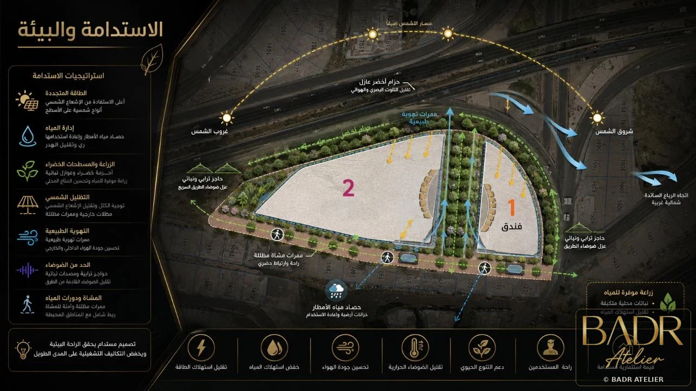
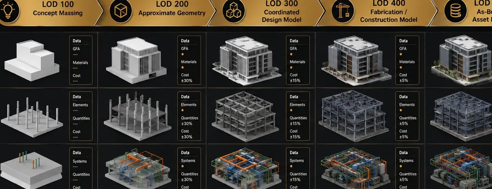

Concept, planning, façade language, public realm, spatial experience and design development.
↗JOIN BADR ATELIER
Build What Comes Next.
With Us.
We are building a studio for people who think before they draw, coordinate before problems reach site, and see design as a path from opportunity to built value.
CAIRO + JEDDAHOne studio mindset. Multiple disciplines. Shared ambition.


ARCHITECTURE
ENGINEERING
BIM + DIGITAL
DEVELOPMENT
THE BADR MINDSETThink deeply. Build clearly.
WHY BADR
We do not hire hands for drawings. We look for minds that improve decisions.
At BADR, architecture, engineering, digital delivery and development thinking meet around the same project question: how can this idea become more valuable, more buildable and more enduring?
That is why we value curiosity with discipline, clear communication, technical depth and people who take ownership of the outcome — not only the task.
CAREER PATHS
Find the discipline where your thinking creates the most value.
These are BADR talent streams — not a claim that every stream has a current vacancy. Strong applications are welcomed for our talent network.
Model strategy, multidisciplinary coordination, information management and digital handover.
↗Technical systems that protect design intent, buildability, coordination and project certainty.
↗Sequencing, logistics, cost intelligence, progress visibility and decision-focused reporting.
↗Site intelligence, mapping, spatial analysis and evidence that strengthens development decisions.
↗Risk awareness, review discipline, compliance thinking and quality gates across delivery.
↗Research, product thinking, market positioning, proposals, storytelling and client-facing strategy.
↗A place for emerging designers and digital thinkers to show how they think, not only what they have produced.
↗WHAT WE VALUE
Talent matters. How you think with others matters more.
Curiosity with Discipline
Ask better questions, then prove the answer with rigor.
Ownership
See the outcome as yours — not simply the task assigned to you.
Connected Thinking
Understand how one design decision affects engineering, cost, time and value.
Clarity
Make complex work understandable to the people who must decide.
HOW TO JOIN
Show us how you think.
A strong application is concise, relevant and honest. We care about the thinking behind the work as much as the final image.
- 01Choose your path
Tell us where your strongest contribution sits.
- 02Send CV + portfolio
Use a portfolio link when possible; keep the story selective and clear.
- 03Studio review
Relevant applications are reviewed against the needs of the studio.
- 04Conversation
If there is a fit, we continue with a focused conversation about the role and how you work.
TALENT PORTAL
Your next project could start here.
Introduce yourself in a few lines. The form prepares an email to BADR Atelier; attach your CV and portfolio after your email app opens.
APPLICATION EMAILcareers@badratelier.com
BADR ATELIER / CAREERS
Do work worth remembering.
Strategy • Architecture • Engineering • BIM
Join the Talent Network ↗